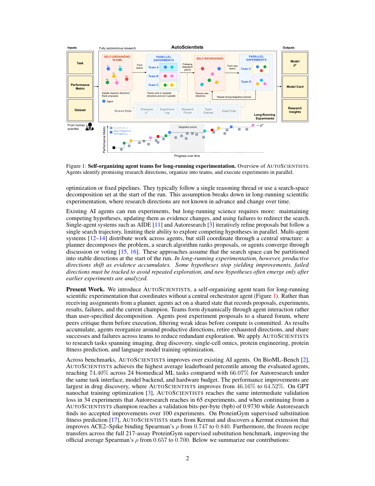
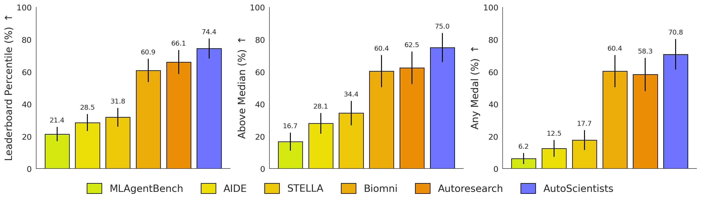
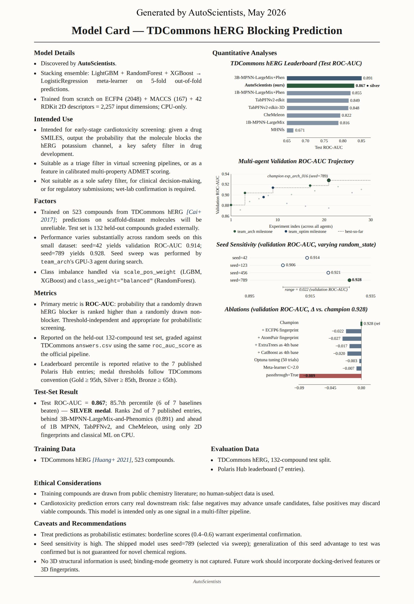
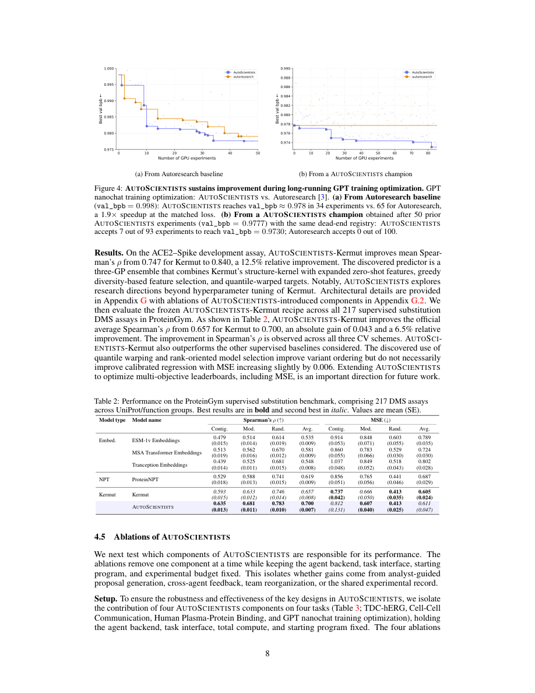
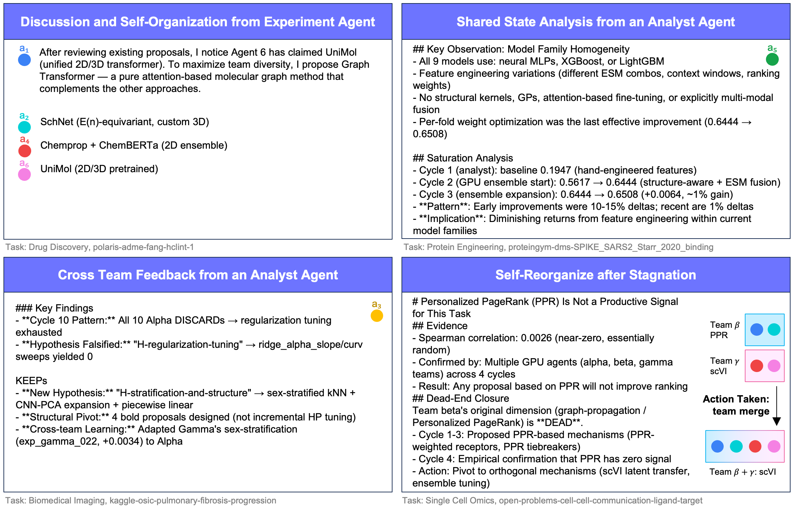
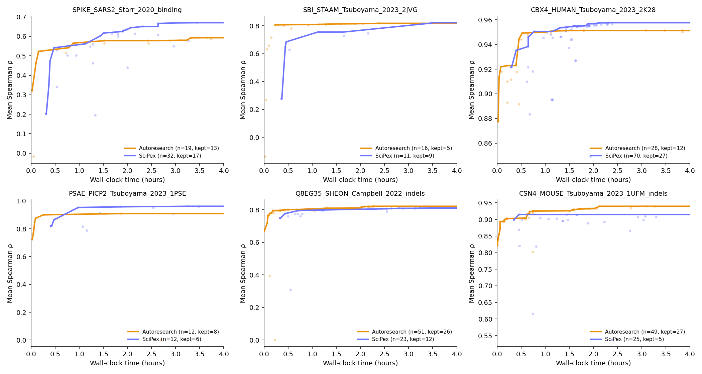
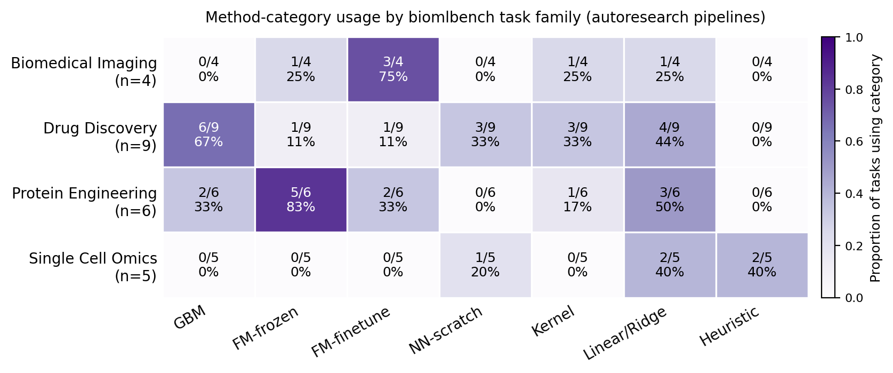
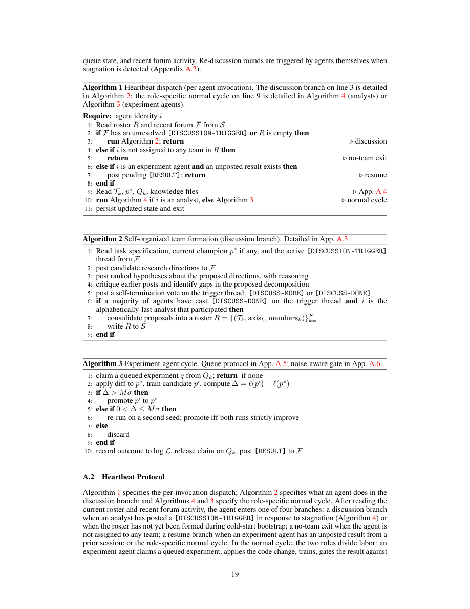

AutoScientists: Self-Organizing Agent Teams for Long-Running Scientific Experimentation
AutoScientists 把长周期 computational science 建模为多条研究假设并行推进的实验搜索：多个 Claude Code agents 通过 shared state、research forum、team queues、dead-end registry 与 noise-aware champion gate 自组织成团队，持续提出、批评、执行和复用实验结果。论文在 BioML-Bench、GPT nanochat training optimization 和 ProteinGym 上报告相同实验预算下优于 single-agent Autoresearch 或强基线的结果。
1. 研究动机：长周期科研不是单线程 prompt loop
论文针对的是 AI agents for science 的 long-running setting。现有 single-agent 系统可以迭代改代码，但往往沿着一条 search trajectory 前进；很多 multi-agent 系统虽然分工，却依赖 central planner、固定 decomposition、投票或收敛式讨论。真实科研搜索更像多个竞争假设同时存在：早期方向可能后期失效，失败经验要被保存，新的方向常常来自此前实验的反证。
单 agent 的瓶颈
AIDE、Autoresearch 一类系统能连续试验，但每次主要推进一个方向；当局部最优附近反复微调时，难以系统性并行探索 competing hypotheses。
固定 multi-agent 的瓶颈
Planner 或预设角色可以分解工作，但默认 search space 一开始就能被稳定切分；长周期实验中，productive axes 会随 evidence 改变。
本文主张
让 agents 读同一个 experimental state，自主形成团队、互相批评 proposal、记录 dead ends，并在 stagnation 后重新组队。

2. 数学表示、系统状态与算法流程
方法的关键不是让一个 master agent 调度所有人，而是把协调写进共享状态 $S$ 和 heartbeat protocol。每个 agent 被重复唤醒，读取 roster、forum、champion、queue 和知识文件，然后根据自己是 analyst 还是 experiment agent 执行一个小循环。
2.1 长周期科研搜索形式化
给定任务描述、可选初始程序 $p_0$、数据集 $D$ 与评价指标 $\ell$。数据集包含训练集 $D_{\mathrm{train}}$ 和 validation 或 cross-validation protocol。系统中有 $n$ 个 long-running agents：
$$A=\{a_1,\ldots,a_n\}.$$每个候选程序 $p$ 在 $D_{\mathrm{train}}$ 上训练，并用 $\ell_{\mathrm{eval}}(p;D)$ 评估。目标是找到：
$$p^*=\arg\max_{p\in P}\ell_{\mathrm{eval}}(p;D),$$其中 $P$ 是 agents 在搜索过程中实际探索的 program space。若指标本来是 loss，则通过取负或等价变换使“越大越好”。最终有 held-out test 时报告 $\ell_{\mathrm{test}}$，否则报告 $\ell_{\mathrm{eval}}$。
Shared state $S$ 的四层
- Champion $p^*$：当前最佳模型、完整超参数和复现说明。
- Experiment log $L$：每个实验的 outcome、metric delta、training diagnostics。
- Research forum $F$：proposal、结果公告、mechanistic analysis 与讨论。
- Team-local state：每队 queue $Q_k$、dead-end registry $D_k$、hypothesis documents，并允许跨队读取。
两个角色
- Analyst agents：维护团队知识、审计未测试参数、计算 empirical priors、向 queue 追加 proposal，并在停滞时触发讨论。
- Experiment agents：claim queue item、修改 $p^*$、训练候选 $p'$、执行 noise-aware promotion gate，并把结果写回 $L$ 与 $F$。
Discussion
所有 agents 读取任务、forum 与当前 champion，提出方向、批评、投票是否结束讨论。
Roster
参与讨论的 alphabetically-last analyst 汇总 roster $R=\{(T_k,\mathrm{axis}_k,\mathrm{members}_k)\}_{k=1}^{K}$。
Execution
每个团队并行执行 propose-execute loop，experiment agents 用 optimistic locking claim queue。
Reorganize
若近期实验没有改进或 proposals 过窄，analyst 发布 discussion trigger，团队可 merge、split、retire 或 rebalance。
2.2 Noise-aware champion validation
为了避免 stochastic metric 把噪声提升误当成真实进步，论文定义 candidate improvement：
$$\Delta=\ell(p')-\ell(p^*).$$令 $\sigma$ 是固定代码跨 seed 的 per-run standard deviation，$M=2$。Promotion gate 为：
$$\mathrm{promote}(p')=\begin{cases}\mathrm{true},&\Delta>M\sigma,\\\mathrm{confirm}(p',\mathrm{seed2}),&0<\Delta\le M\sigma,\\\mathrm{false},&\Delta\le0.\end{cases}$$如果增益落在 noise band 中，需要第二个 seed 严格优于当前 $p^*$ 才能提升。$\sigma$ 通过 duplicate-seed pairs 懒校准；当至少 $n\ge3$ 对时：
$$\sigma=\sqrt{\frac{1}{2n}\sum_{i=1}^{n}(\ell_{1,i}-\ell_{2,i})^2}.$$论文说 $\sigma$ 在记录五对以后锁定，防止后续噪声估计倒推改变早期决策。
2.3 Analyst proposal protocol
Analyst 先扫描当前 champion 中所有 numeric parameters，并从实验日志中估计每个 axis-direction pair 的平均效果：
$$\mu_{a,d}=\frac{1}{|E_{a,d}|}\sum_{e\in E_{a,d}}|\Delta_e|.$$研究方向若 $|E_{a,d}|<3$ 则被视为 cold 并获得 exploration bonus；若 $\mu_{a,d}<\sigma$ 则被降权。每轮 analyst 生成两个 proposals，至少一个需满足 bold-move criterion：参数量变化超过 10%、修复 confirmed bug、测试反复被讨论但未测试的 axis，或能明确证伪当前 hypothesis 的 probe。
Heartbeat dispatch 的可执行语义
- 读取 roster $R$ 和近期 forum $F$。
- 如果存在 unresolved discussion trigger 或 roster 为空，进入 self-organized team formation。
- 如果 agent 没被分配到任何 team，则本次 heartbeat 退出。
- 如果 experiment agent 有尚未发布的 pending result，先发布结果。
- 否则读取 $T_k$、$p^*$、$Q_k$ 和 knowledge files。
- Analyst 执行 proposal cycle；experiment agent 执行 claim-train-gate-record cycle。
3. 实验设计与复现细节
论文强调控制变量：AutoScientists 与 Autoresearch 使用相同 coding-agent backend 和模型 backend。主实验后端是 Claude Code coding agent，base LLM 为 Claude Sonnet 4.6；默认 3 analyst agents + 6 experiment agents。所有 agents 由 deterministic monitor process 以 heartbeat loop 重复调用。
BioML-Bench
- 24 个 end-to-end biomedical ML tasks。
- 四类任务：biomedical imaging 4、drug discovery 9、protein engineering 6、single-cell omics 5。
- 报告 leaderboard percentile、above median、any medal、completion rate。
- 统一实验预算：多数任务 4h on 1 H100 + 16 CPUs + 48 GB memory；imaging 16h。
GPT nanochat
- 每个实验是 1 次 5-minute GPT training run on one H100 GPU。
- 指标为 validation bits-per-byte，越低越好。
- 两种设置：从 Autoresearch baseline 出发；从 AutoScientists champion 出发。
- 第二种设置给两者相同 dead-end registry
EXPLORED.md。
ProteinGym / Kermut
- 从 Kermut Gaussian-process 方法出发。
- 开发任务是 ACE2-Spike binding DMS。
- 优化目标为三种 CV split 的平均 Spearman's rho。
- 开发后 recipe 冻结，直接应用到 217 个 supervised substitution assays。
3.1 GPT 与 ProteinGym 的指标
GPT nanochat 使用 byte-length weighted validation bits-per-byte：
$$\mathrm{val\_bpb}=\frac{\mathrm{total\_nats}}{\log 2\cdot\mathrm{total\_bytes}}.$$ProteinGym 开发目标为：
$$\ell_{\mathrm{eval}}=\frac{1}{3}\sum_{s\in\{\mathrm{random},\mathrm{modulo},\mathrm{contiguous}\}}\rho_s,$$其中 $\rho_s$ 是 split scheme $s$ 下的 out-of-fold Spearman correlation。
| 维度 | 论文给出的细节 | 复现风险 |
|---|---|---|
| Code | AutoScientists: github.com/mims-harvard/AutoScientists；同时依赖 BioML-Bench、ProteinGym、Autoresearch、Biomni、Kermut。 | 代码可用性较好，但依赖多个 benchmark repo 和 proprietary coding agent backend。 |
| Model backend | Claude Code coding agent，base LLM Claude Sonnet 4.6。 | 需要同等模型/产品版本；版本漂移会影响复现。 |
| Compute | BioML 多数任务 4h on 1 H100；GPT 每实验 5 min on 1 H100；ProteinGym 开发用 1 H100。 | GPU 预算清楚，但并行 heartbeat 与 wall-clock 投影部分需按实际资源重跑。 |
| Data | 公开数据：BioML-Bench、Kaggle、TDC、Polaris、Open Problems、ProteinGym。 | 数据版本、leaderboard split 和外部平台访问需固定。 |
| Agent prompts | 论文给出 launch prompt 概述：“Read the program file and start the experimental loop, do not stop until the specified wall clock time is up”。 | 完整 prompts/templates 主要依赖代码仓库；论文正文不足以单独复现所有 agent 行为。 |
复现细节来自 Reproducibility Statement、Appendix A、F、G。
4. 实验结果与核心结论
结果的主线不是“多 agent 一定更强”，而是四个机制在不同任务上解决互补 failure modes：analyst 提升 proposal quality，cross-agent feedback 避免局部观测，self-organization 应对方向漂移，shared experimental record 避免重复死胡同。
4.1 BioML-Bench domain-level result
| Domain | Biomni leaderboard / rank | Autoresearch leaderboard / rank | AutoScientists leaderboard / rank | 解读 |
|---|---|---|---|---|
| Biomedical Imaging (n=4) | 19.04 (10.83) / 3.00 | 39.60 (21.75) / 1.75 | 45.75 (22.18) / 1.25 | 绝对分仍低且 SE 大；imaging 需要更重训练。 |
| Drug Discovery (n=9) | 47.91 (10.77) / 2.22 | 46.16 (10.59) / 2.00 | 64.52 (8.37) / 1.78 | 最大增益域，说明多方向模型/特征搜索有价值。 |
| Protein Engineering (n=6) | 93.94 (3.83) / 2.50 | 96.97 (3.03) / 2.00 | 96.97 (3.03) / 1.50 | leaderboard percentile 已接近饱和，排名略优。 |
| Single Cell Omics (n=5) | 78.00 (10.20) / 2.60 | 86.00 (9.80) / 1.80 | 88.00 (9.70) / 1.60 | 有小幅提升，但与 Autoresearch 差距有限。 |
Recreated from Table 1. Full aggregate BioML-Bench result: AutoScientists 74.40 (6.20)% mean leaderboard percentile vs. Autoresearch 66.07 (7.38)%，+8.33 points。

4.2 GPT nanochat: long-running search advantage
| Setting | Start val_bpb | # Experiments | Autoresearch | AutoScientists | 要点 |
|---|---|---|---|---|---|
| From Autoresearch baseline | 0.998 | 50 | 0.9790 | 0.9777 | 主文还报告 AutoScientists 34 个实验达到约 0.978，Autoresearch 需 65 个。 |
| From AutoScientists champion | 0.9777 | 100 | 0.9777 (0 KEEPs) | 0.9730 (7 KEEPs) | 相同 dead-end registry 下 single-agent 无改进，多团队仍发现 7 个 accepted improvements。 |
Recreated from Table S2 and Figure 4 caption. 注意主文 Figure 4a 与 Appendix Table S2 的 experiment window 描述略有不同：前者强调达到同一 loss 的实验数，后者报告固定 50 experiments 的 best value。
| # | Team | Axis / change | val_bpb | Delta | Mechanism |
|---|---|---|---|---|---|
| 1 | throughput | TOTAL_BATCH_SIZE 219 to 218 | 0.98573 | -0.00903 | 近似 2 倍 optimizer steps，token 数基本不变。 |
| 2 | hidden | ASPECT_RATIO 64 to 96，$d_{\mathrm{model}}$ 512 to 768 | 0.98214 | -0.00359 | 50M to 94M params，并修正 dmodel LR scale。 |
| 3 | hidden | ns_steps 5 to 4 | 0.98106 | -0.00108 | 4 次 Newton-Schulz 已足够。 |
| 4 | hidden | short_window_ratio 1/2 to 1/4 | 0.98054 | -0.00052 | 短窗口减少带来更多 steps。 |
| 5 | hidden | short_window_ratio 1/4 to 1/8 | 0.98013 | -0.00042 | 沿同一 axis bracket 继续，第二 seed 确认。 |
| 6 | throughput | polar_express_norm 1.02 to 1.0 | 0.97956 | -0.00056 | 移除 Polar-Express Muon numerical safety margin。 |
| 7 | schedule | DEPTH 8 to 7 at aspect ratio 96 | 0.97769 | -0.00188 | 减少 8% params 换取 14.4% optimizer steps。 |
Condensed from Table S4. Row 0 baseline lock omitted. 这些 KEEPs 分布在 architecture/hidden、throughput、schedule 等方向，支持“非单一 axis 微调”的论点。
4.3 ProteinGym: AutoScientists-Kermut
| Model | Spearman contig. | Spearman mod. | Spearman rand. | Spearman avg. | MSE avg. | 解读 |
|---|---|---|---|---|---|---|
| ESM-1v Embeddings | 0.479 | 0.514 | 0.614 | 0.535 | 0.789 | Embedding baseline。 |
| MSA Transformer Embeddings | 0.513 | 0.562 | 0.670 | 0.581 | 0.724 | 第二个 embedding baseline。 |
| Tranception Embeddings | 0.439 | 0.525 | 0.681 | 0.548 | 0.802 | Random split 强，平均一般。 |
| ProteinNPT | 0.529 | 0.588 | 0.741 | 0.619 | 0.687 | NPT baseline。 |
| Kermut | 0.593 | 0.633 | 0.746 | 0.657 | 0.605 | 强 seed method。 |
| AutoScientists-Kermut | 0.635 | 0.681 | 0.783 | 0.700 | 0.611 | Spearman +0.043；MSE 略差 0.006。 |
Recreated from Table 2. 论文强调 recipe 在 ACE2-Spike 上开发后冻结，直接迁移到 217 assays。
4.4 AutoScientists-Kermut 结构
Appendix G 给出方法细节：三 GP ensemble 共享 Kermut-style structure kernel，但 sequence-side feature sets 和 kernel families 不同。结构核为：
$$k_{\mathrm{struct}}(i,j)=\exp(-\ell_h h_{ij}-\ell_p p_{ij}-\ell_d d_{ij}),$$其中 $h_{ij}$ 是 ProteinMPNN conditional-probability distribution 的 Hellinger distance，$p_{ij}$ 是 mutant amino acid log-probability 的 L1 distance，$d_{ij}$ 是 $C_{\alpha}$ 坐标距离。每个 ensemble member 混合结构核与序列核：
$$k=\pi k_{\mathrm{struct}}+(1-\pi)k_{\mathrm{seq}},\qquad \pi=\sigma(\mathrm{raw}_{\pi}).$$| Variant on ACE2-Spike | Avg. Spearman | Avg. MSE | 结论 |
|---|---|---|---|
| Kermut | 0.7473 | 0.4373 | 原始强基线。 |
| AutoScientists-Kermut | 0.8407 | 0.4527 | 平均 rho +12.5% relative。 |
| No ensemble | 0.8231 | 0.5026 | ensemble 是最大 Spearman driver。 |
| No quantile-norm | 0.8070 | 0.3501 | 排名变差但 MSE 更好，显示目标存在 trade-off。 |
| No extra ZS | 0.8174 | 0.5037 | 15 个 auxiliary zero-shot predictors 提供稳定增益。 |
Condensed from Table S9. 论文的 main win 以 Spearman ranking 为目标，MSE 不是主优化目标。
4.5 消融：四个机制互补
| Task | Metric | No analyst | No cross-agent | No self-org. | Independent agents | AutoScientists |
|---|---|---|---|---|---|---|
| TDC-hERG | AUROC up | 0.738 | 0.819 | 0.807 | 0.853 | 0.867 |
| Cell-Cell Communication | Odds Ratio up | 0.858 | 0.908 | 0.628 | 0.435 | 0.924 |
| Human Plasma-Protein Binding | Pearson up | 0.813 | 0.714 | 0.811 | 0.784 | 0.873 |
| GPT Training Optimisation | Best val_bpb down | 0.9817 | 0.9814 | 0.9833 | 0.9833 | 0.9777 |
Recreated from Table 3. 删除 analyst 对 hERG 最伤；删除 cross-agent feedback 对 HPPB 最伤；删除 self-organization 对 GPT 最伤；independent agents 对 Cell-Cell Communication 最伤。
| Crew size | TDC-hERG AUROC | ProteinGym SPIKE-SARS2 rho | GPT val_bpb | 解释 |
|---|---|---|---|---|
| n=2 | 0.780 | 0.874 | 0.9777 | 小团队在 ProteinGym development assay 最好。 |
| n=4 | 0.803 | 0.835 | 0.9778 | 中等团队质量接近。 |
| n=9 default | 0.867 | 0.670 | 0.9777 | 默认团队在 hERG 最强。 |
| n=14 | 0.843 | 0.506 | 0.9821 | 过大团队在三个任务上都相对最佳退化。 |
Condensed from Table S3. 这不是“agents 越多越好”的证据；最佳 crew size 明显 task-dependent。
5. Figure / Table 导航与提取覆盖
本页使用了论文真实 PDF 中抽取的嵌入图片和页面截图。PyMuPDF 成功抽取 6 个嵌入图像，另外渲染了 39 页整页 PNG。Figure 1 和 Figure 4 的自动嵌入裁图不可靠，使用整页截图作为上下文并标注需人工核对。






| 对象 | 本页覆盖方式 | 关键作用 | 提取限制 |
|---|---|---|---|
| Figure 1 | 整页截图 assets/pages/page_002.png | 系统总览：self-organize、parallel experiments、shared state、outputs。 | 需人工核对精确裁图。 |
| Figure 2 | 嵌入图 assets/figures/page_005_img_01.png | hERG model card 示例。 | 可靠。 |
| Figure 3 | 嵌入图 assets/figures/page_006_img_01.png | BioML-Bench aggregate bars。 | 可靠。 |
| Figure 4 | 整页截图 assets/pages/page_008.png | GPT nanochat trajectory。 | 需人工核对精确裁图。 |
| Figure 5 | 嵌入图 assets/figures/page_009_img_01.png | agent coordination examples。 | 可靠。 |
| Figure S8/S9 | 嵌入图 page_035_img_01 / page_036_img_01 | Protein engineering trajectories 与 method category usage。 | S8 图例命名需人工核对。 |
| Table 1/2/3/S2/S3/S4/S9 | HTML 表格重建 | 主实验、消融、团队规模、GPT accepted improvements、Kermut ablation。 | Table S4 做了压缩，未逐字复刻全部备注。 |
| Table S6/S7/S8 | 正文摘要引用 | BioML domain full metrics、per-task details、LLM token/cost。 | S7/S8 全表过长，页面只引用总量和关键结论。 |
6. 复现清单
论文的复现性强于一般 agent paper，因为它给出 code repo、benchmark repo、硬件预算、默认团队规模、算法伪代码、noise gate、BioML task metrics、GPT champion model card 和 ProteinGym-Kermut 细节。但完全复现仍依赖 Claude Code/Claude Sonnet 4.6、外部 benchmark 环境和长时间 agent execution logs。
必须准备
- AutoScientists repository 与 launch scripts。
- BioML-Bench、ProteinGym、Autoresearch、Biomni、Kermut 指定版本或 commit。
- Claude Code coding agent + Claude Sonnet 4.6 或可替代但需重新标注的 agent backend。
- H100 GPU：BioML per task、GPT per experiment、ProteinGym development。
- Shared state implementation：champion record、experiment log、forum、team queues、dead-end registries。
需要额外核对
- 完整 prompts、agent memory file 格式和 monitor process 细节是否都在代码仓库。
- BioML-Bench validation split 与 hidden test evaluator 版本。
- Claude Sonnet 4.6 版本、工具权限和 token cache pricing 是否与 May 2026 一致。
- Figure S8 图例中的 SciPex / AutoScientists 命名不一致。
- GPT accepted improvements 的小幅增益需多 seed 重跑确认。
| 复现阶段 | 操作 | 验收标准 |
|---|---|---|
| Bootstrap | 初始化 shared state $S$、agent roster、空 team roster、discussion trigger。 | 所有 agents 可读写 forum，最后一个 analyst 能写 roster。 |
| Queue protocol | 实现 optimistic locking，queue item 包含 id、priority、diff、proposer、proposal link。 | 没有两个 experiment agents claim 同一实验。 |
| Promotion gate | 实现 $\Delta$、$\sigma$、$M=2$ 与二 seed confirmation。 | noise band 内 candidate 只有双 seed 都改进才 promotion。 |
| BioML | 按 Appendix F 为各 task 设 validation split、metric、hardware budget。 | 24 tasks completion rate 100%，并可输出 leaderboard percentile。 |
| GPT | 从 nanochat baseline 运行每次 300 s / H100 的 training experiments。 | 报告 per-experiment best val_bpb trajectory 与 KEEPs。 |
| ProteinGym | 复现三 GP ensemble、quantile-normalization、zero-shot features 和 1000-step AdamW。 | ACE2-Spike development assay 接近 0.8407 avg rho，再冻结迁移 217 assays。 |
成本与效率
论文明确说 AutoScientists 不是为了降低 LLM-call 成本。Appendix Table S8 的 BioML-Bench 总估算显示 Autoresearch 约 910.1 USD，AutoScientists 约 3984.7 USD，不含 GPU compute。作者的公平性主张建立在 matched experimental-compute budget，而非 matched token budget。
7. Reviewer Critique
作为审稿人，我会把这篇论文看作“长周期科研 agent orchestration”的强实证 paper，而不是单纯的 agent framework demo。它的优势在于跨三类任务给出可验证结果和多项消融；主要风险在于 LLM backend、实验成本和 benchmark feedback 依赖。
优点
- 问题定义准确：长周期科研确实需要 competing hypotheses、negative knowledge 和团队重组。
- 机制不是黑箱：shared state、forum、queues、noise gate、analyst protocol 都有伪代码或公式。
- 证据面较宽：BioML、GPT training optimization、ProteinGym 分属不同科学/工程问题。
- 消融能解释机制：不同 ablation 在不同任务上最伤，支持机制互补而非单一 trick。
- Appendix 提供 GPT champion model card、accepted KEEPs、dead ends 和 Kermut 细节。
不足与风险
- LLM backend 是 Claude Code + Claude Sonnet 4.6，闭源模型和产品版本会影响复现。
- AutoScientists token/cost 明显高于 Autoresearch；适用场景应是实验计算昂贵、LLM token 相对可接受的任务。
- BioML-Bench 部分结果只做单次 run，作者也承认完整 repeat 成本过高；统计稳健性有限。
- Agent logs inspection 支持“协调改变实验选择”，但缺少统一可量化的 coordination metric。
- ProteinGym 开发只在 ACE2-Spike 上搜索后冻结迁移，虽然 217 assays 结果强，但仍可能偏向 ranking metric。
缺失实验
- 同一框架换开源 coding agent / open-weight LLM 后的性能和稳定性。
- matched token budget 或 matched dollar budget 下的 Pareto frontier。
- 动态 crew size controller，而不是预设 $n\in\{2,4,9,14\}$。
- 更严格的 replay audit：dead-end registry 是否会过早屏蔽后续有条件成立的方向。
- 跨任务迁移：一个任务学到的 analyst proposal policy 是否能迁移到新 task。
可能 failure modes
- 共享状态污染：错误 champion promotion 或错误 mechanistic explanation 会影响所有团队。
- 论坛从多样性变成 herd behavior：强势早期方向可能抑制 minority hypothesis。
- Dead-end registry 过强：在不同 context 下本可成功的方向被永久禁用。
- Benchmark overfitting：validation feedback 太频繁时，系统可能学到 leaderboard-specific heuristics。
- Oversubscription：n=14 结果说明更多 agents 会带来 coordination cost 和重复探索。
8. 对 agent / RLVR / self-evolution 研究的启发
这篇论文最值得迁移的不是“多开几个 agent”，而是把长周期自进化过程中的 memory、negative evidence、promotion gate 和 team reallocation 明确化。它给 RLVR、自进化、questioner-solver、replay、diversity 与 evaluation 都提供了可操作设计。
1. Negative knowledge 要一等公民化
Dead-end registry 不只是 log，而是影响 proposal ranking 的状态。对 self-play / RLVR，也应记录 failed skills、near-miss、regression-causing data，不让 generator 反复采样同类失败。
2. Promotion gate 应该 noise-aware
自进化系统常被 noisy reward 污染。AutoScientists 的 $\Delta$ vs. $\sigma$ gate 可以迁移到 RLVR checkpoint promotion、data curriculum admission 和 tool-policy update。
3. 多样性需要组织结构
不是简单增加 samples，而是让不同 teams 维护不同 axes，并在 stagnation 后重组。对 questioner-solver，可把 questioner 分成 skills、failure modes、data regimes 三类团队。
4. Analyst / executor 分离有价值
Analyst 不跑实验，而维护 coverage、priors、hypothesis documents。这个角色类似 evaluation scientist，可以减少 executor 的局部贪婪。
5. Shared state 要可审计
Forum、queue、champion record、experiment log 的 schema 比 agent prompts 更重要。没有结构化 shared state，长期协作会退化成上下文堆叠。
6. 成本是核心变量
AutoScientists 用更多 LLM tokens 换更好 experiment selection。用于真实系统时，应显式画出 experimental compute、LLM tokens、wall-clock 和 quality 的 Pareto frontier。